Guided AI tools & Private Tutor
Age-appropriate tools for research, writing, coding, design, data, and presentations — linked to specific modules and learning objectives.
Curriculum, guided tools, assessments, and insights for KG1–Grade 12, in one platform.
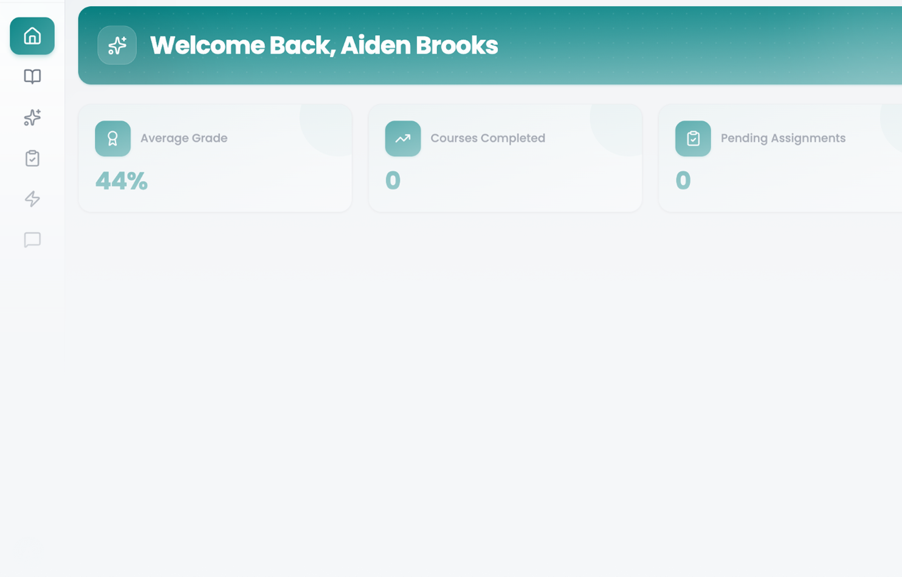
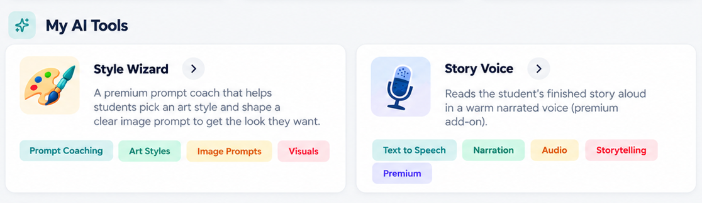
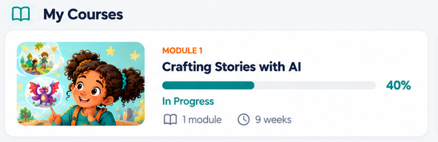
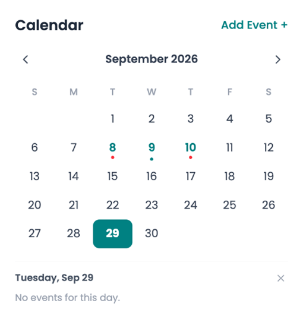
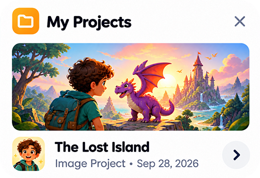
Trusted by schools and partners across Lebanon and Ghana
With GADEF International.
Read the announcement → (opens in a new tab)The question is whether they're learning to use it well.
Most schools are piecing AI together from separate tools, subscriptions, and policies, with little structure for students and little visibility for leaders. aiSTART brings it into one place.
A structured KG1–Grade 12 pathway to question, verify, and create with AI.
Ready-to-teach lessons, guided tools, and training, so no one starts from scratch.
Adoption, progress, and signals in one view, with your school in control.
A project-based pathway that grows with the student, from creative exploration in the early years to AI research and industry readiness in Grade 12. Ethics is part of every grade.
A Private Tutor that guides instead of answering.
Discover guided AI tools →AI drafts them. Teachers review every question.
See the assessment builder →Controlled access, taught safety, and the Student Oath.
See Trust & Safety →Also included: Flex Live Games · Community Projects
No need to figure out AI adoption alone. Setup, classroom support, training, and help all year come from one team.
A 30-minute call, tailored to your school. We reply within 2 working days.
aiSTART connects curriculum, student AI tools, assessments, projects, analytics, AI-powered insights, and administration within one infrastructure — instead of a patchwork of separate products.
Giving students access to AI is easy.
Teaching them to question it, verify it, and create with it is harder.
Understanding what happens after they begin using it is harder still.
aiSTART connects all three.
Seven tools across four areas, from the classroom to the leadership office.
Age-appropriate tools for research, writing, coding, design, data, and presentations — linked to specific modules and learning objectives.
Real-time quizzes for revision, warm-ups, formative assessment, and classroom competitions.
Larger pieces of authentic work with instructions, deadlines, rubrics, submissions, and both teacher and peer feedback.
Generate an AI-assisted draft, then review, edit, add your own questions, schedule, and publish.
Manage users, roles, permissions, tool access, safeguards, and usage limits centrally.
Convert existing PDF or PowerPoint lessons from any subject into HTML content hosted in aiSTART. Available as an additional service.
Authorized staff explore school data by asking questions in plain language.
Six steps, from setting up your school to deciding what happens next.
We create your student and teacher accounts, organize grades and sections, assign roles, and configure access and safeguards.
Teachers open structured lessons and activities instead of starting from scratch. Students progress through age-appropriate AI learning.
Students use guided tools to research, design, investigate, code, and create — with the Private Tutor on hand.
Teachers use assessments, Flex, activities, and projects to check understanding and find gaps.
Authorized teachers and leaders ask AI about performance, engagement, and which students may need support.
Educators decide what happens next. AI surfaces patterns and signals; it does not replace professional judgment.
Dashboards tell you what happened. Conversational AI helps you find what deserves attention.
Authorized staff can explore progress, strengths, support needs, assessment patterns, engagement, participation, and platform misuse or safeguarding indicators.
Access is role-based — staff only see what they're authorized to see.
Everyone works in the same platform, and each role sees what it needs.
Learn. Build. Experiment. Create. Grow.
Teach. Assign. Assess. Ask. Support.
Deploy. Monitor. Understand. Govern.
Where authorized, see adoption and usage across participating institutions.
We'll show the platform set up for your school's roles and tools.
It should grow with the student.
A structured, project-based AI curriculum from KG1 through Grade 12 that grows in depth as learners progress — ready for your teachers to deliver.
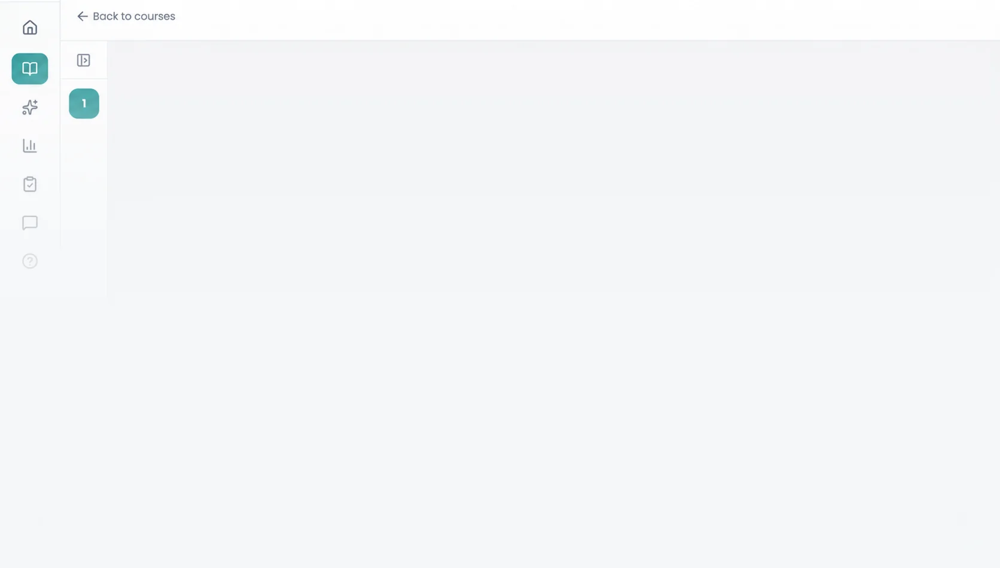
Try hovering over the robot.Try tapping the robot.
Everything a teacher needs to run AI lessons, KG1 to Grade 12.
Each grade builds on the last, from smart systems in KG to AI research and industry readiness in Grade 12.
Privacy, bias, fact-checking and digital citizenship in every grade band, with a dedicated "Ethics of AI & Digital Citizenship" module from Grade 4.
Objectives, content, activities, discussion questions, videos, and deliverables for every 45–60 minute session. No AI background needed, and platform training is included.
Students create stories, products, models, and research, not just chat with AI.
Assessments, Flex games, and Community Projects with rubrics, all linked to the modules.
Content can be customized for educational, cultural, or design needs. Web-based lessons work with browser translation tools.Browser translations come from third-party services, may vary in accuracy, and don't switch pages to right-to-left layout.
Ten stops from KG1 to Grade 12. Use the arrows or swipe.
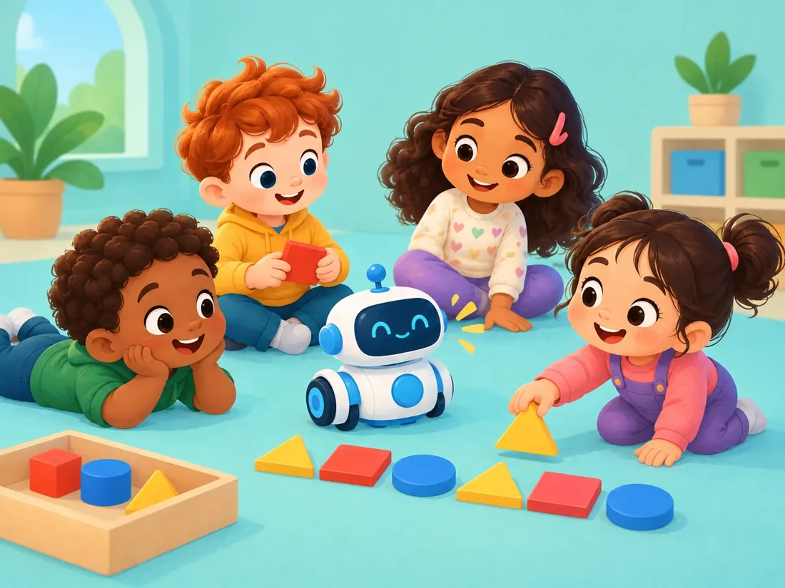
Young learners meet smart systems through play, patterns, and cause and effect, and start forming safe, kind technology habits.
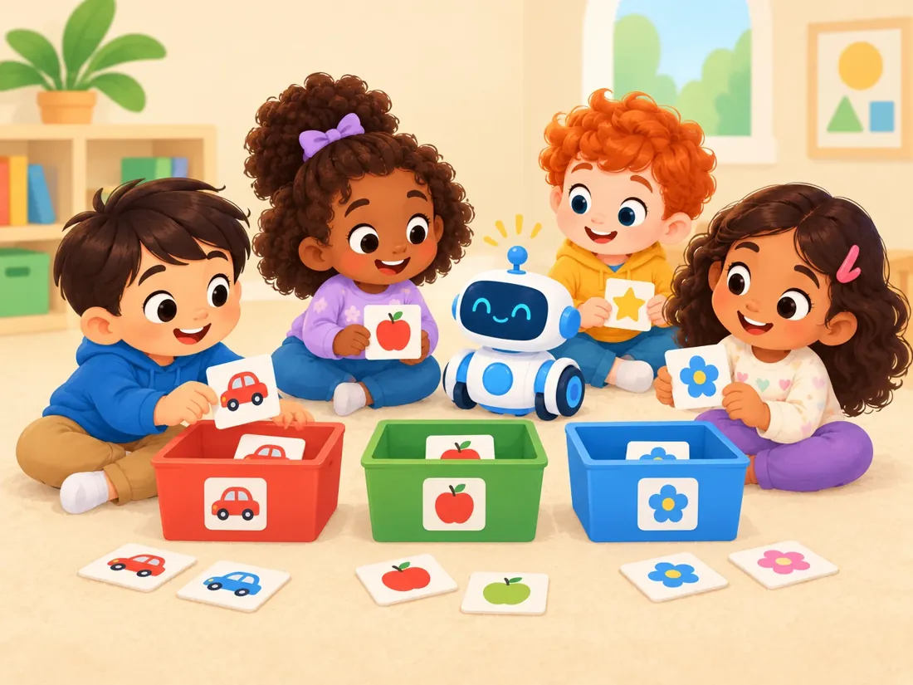
Students explore data, classification, rules, and instructions, and begin asking whether information and decisions are fair.
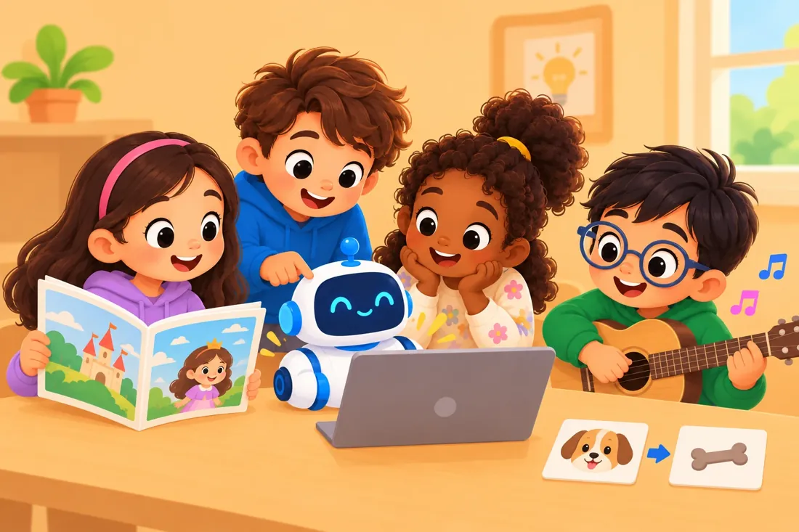
Students create stories, visuals, and music with AI, and learn how machines learn and classify.
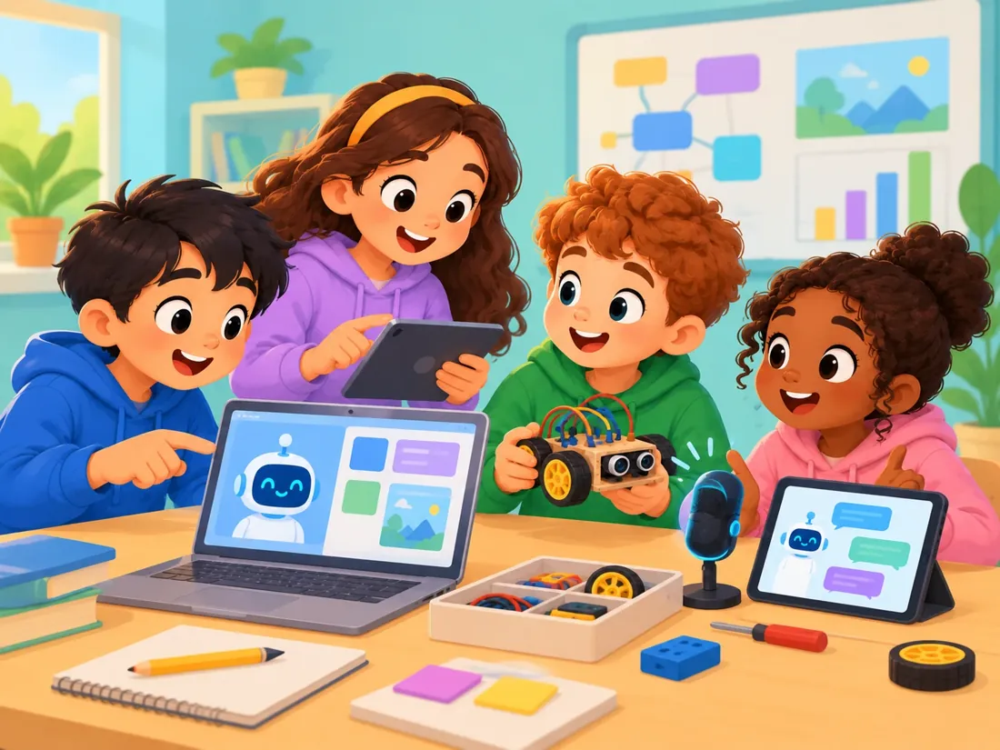
Students use AI for research and communication, and build their first models and digital products.
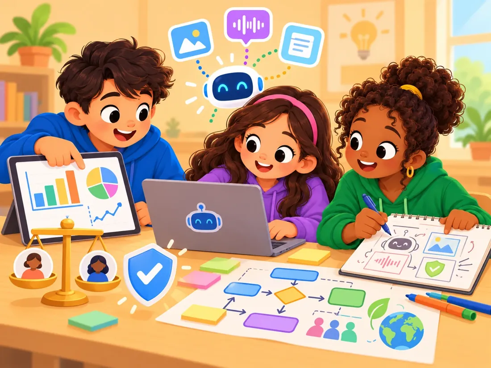
Students work with data representation, multimodal AI, and decision-making, and design AI products that are fair and safe to use.
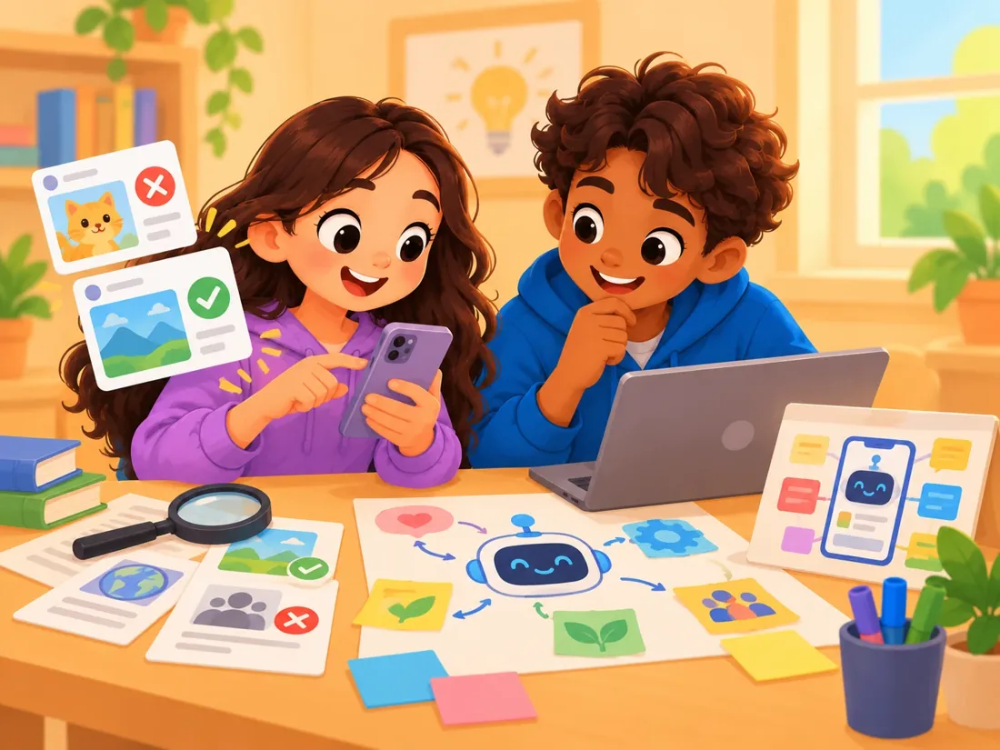
Students examine the AI in their pockets and feeds, learn to verify, and take on an innovation challenge.
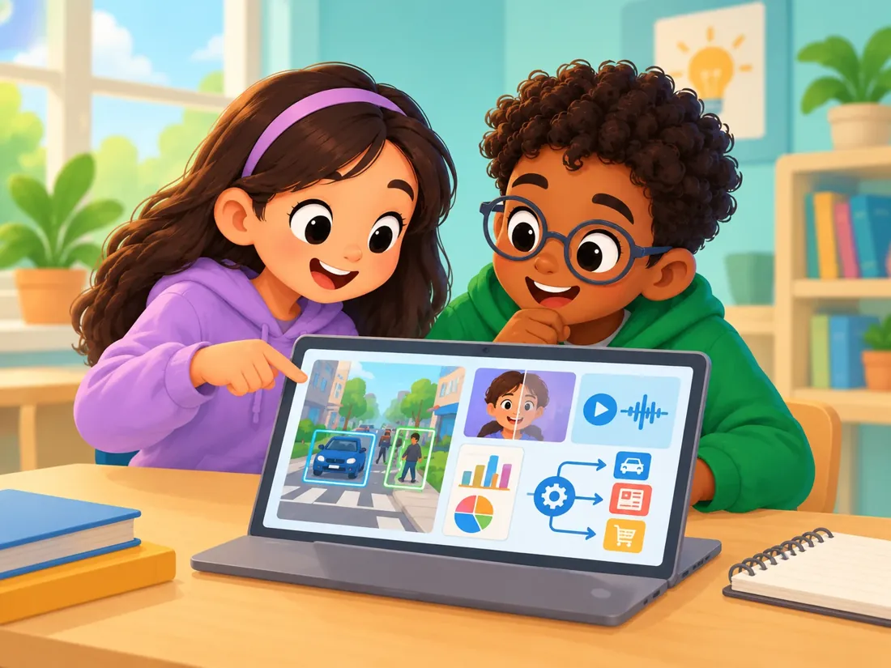
Students study computer vision, synthetic media, data, and the algorithms shaping public life.
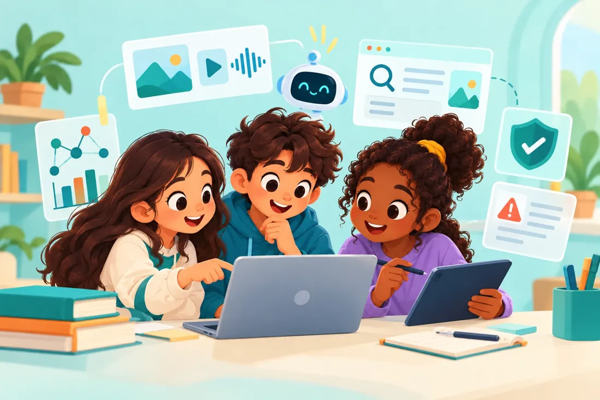
Students go deeper into generative and agentic AI, misinformation, and digital self-defense.
Students apply AI to startups, careers, and data-driven decisions, and debate its ethical concerns.
Students explore AI in the global economy, organizations, and infrastructure, and carry out deep AI research.
Choose how AI fits into your timetable.
AI runs as its own subject on the timetable.
Best for schools that want a clear, standalone AI program.
AI learning is integrated into chosen existing subjects.
Best for schools that want AI inside chosen subjects.
AI is woven across existing subjects and learning experiences.
Best for schools ready to use AI school-wide, with Extended Curriculum Hosting.
A full KG1–12 pathway, ready for your teachers.
We'll walk you through the grades you teach and how lessons run.
Curriculum, tools, assessments, insights, governance, and a rollout team — everything needed to introduce AI across an institution.
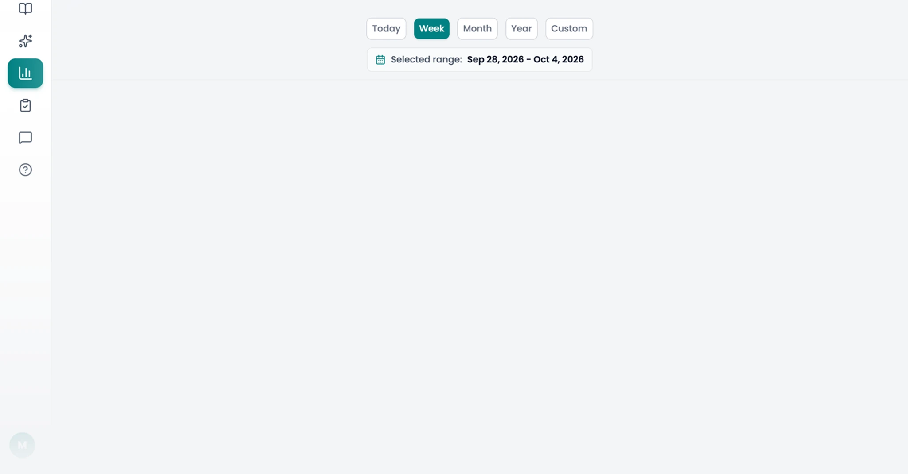
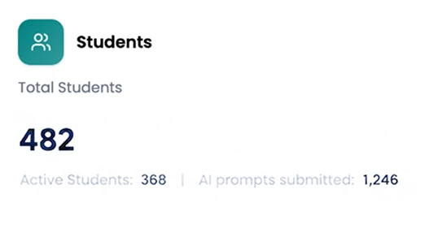
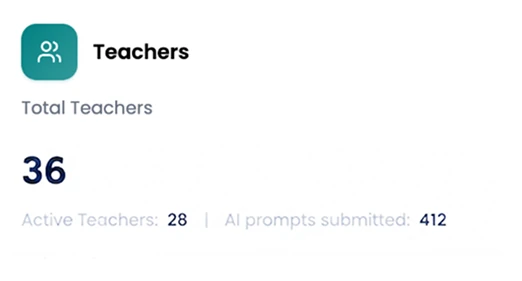
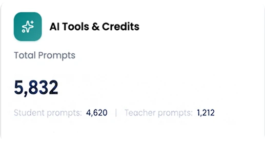
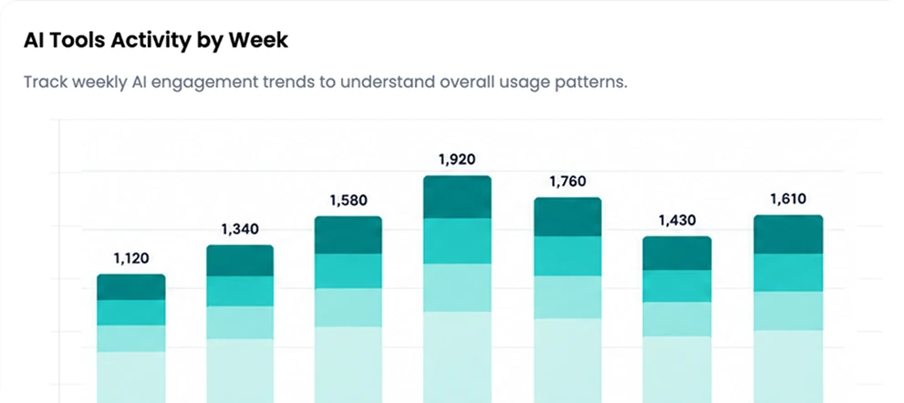
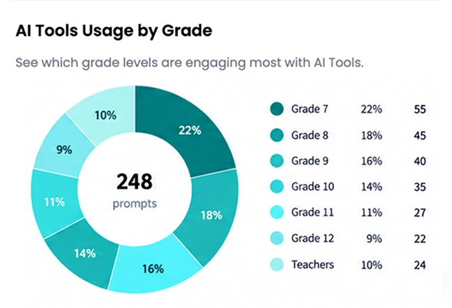
Most schools buy AI in pieces. aiSTART brings the experience together.
One AI infrastructure
Track active students and teachers, prompt activity, usage over time, engagement by grade, assessment activity, and project participation across your institution.
You don't have time to interpret every chart. Ask a question in plain language and get an answer from the data you're authorized to see.
Then drill down to the evidence behind it: assessments, responses, submissions, rubrics, feedback, and — where authorized — relevant AI interactions.
Wellbeing signals always go to a person for review. How signals are handled →
Decide who sees what — especially student analytics and safeguarding information.
Turn tools on by grade, and set content controls and usage limits.
Route signals to the right staff through your own safeguarding procedures.
AI surfaces information. Your staff remain responsible for decisions. Trust & Safety →
Deploy one shared curriculum across every institution, with central visibility where authorized.
Human capital intelligence: see teacher readiness and skill gaps, and target training where it is needed.
Adapts to local culture, policy, and curriculum across international and MENA systems.
Proof at scale: a five-year initiative with GADEF International, starting in Ghana.
For leadership teams: rollout, governance, and adoption in one call.
Ready-made lessons, guided tools, assessments, live games, and projects — plus training and a team to support you.
Open your assigned course and find:
The structure is already there.
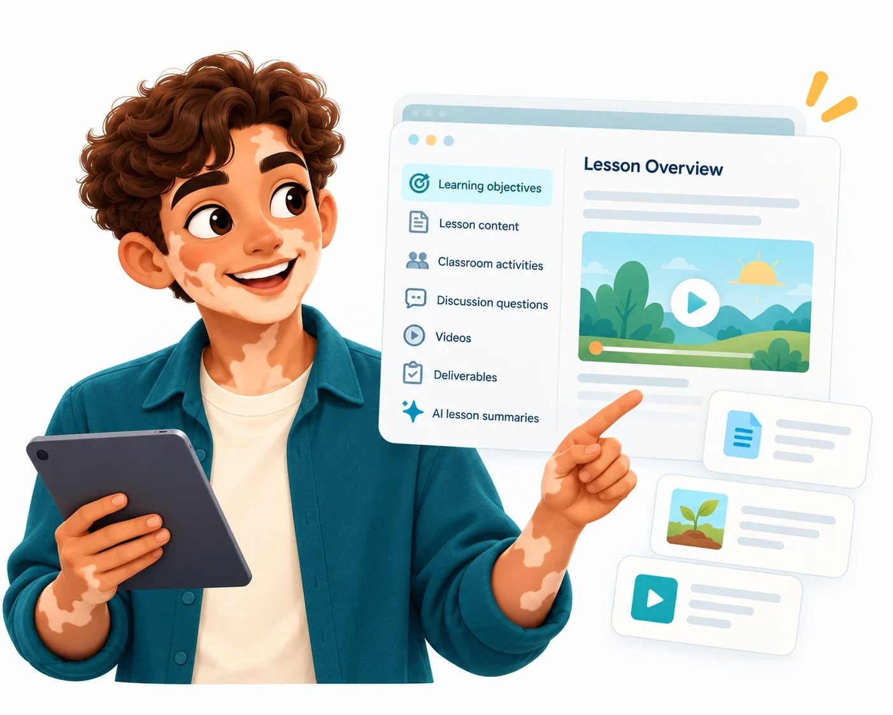
When students get stuck, the Private Tutor guides their thinking instead of handing over the answer.
Guided tools for research, writing, coding, data, presentations, visual creation, and career exploration — designed to make students think while they build.
Convert your PDF or PowerPoint material into lessons hosted in aiSTART, and use its tools and analytics beyond the AI subject.
Choose the grade, section, lesson, question type, difficulty, and number of questions. Generate a draft with AI, then review, edit, personalize, set the timing, and publish.
You keep control.

Real-time quizzes for revision, warm-ups, formative assessment, classroom competitions, and quick understanding checks.
Community Projects give students larger pieces of work with instructions, deadlines, rubrics, submissions, feedback, and peer interaction.
Ask AI about your class instead of manually interpreting every piece of data. It surfaces patterns in progress, participation, strengths, and support needs from the information you're authorized to see.
You decide what those patterns mean and what to do next.
Wellbeing signals always go to a person for review. How signals are handled →
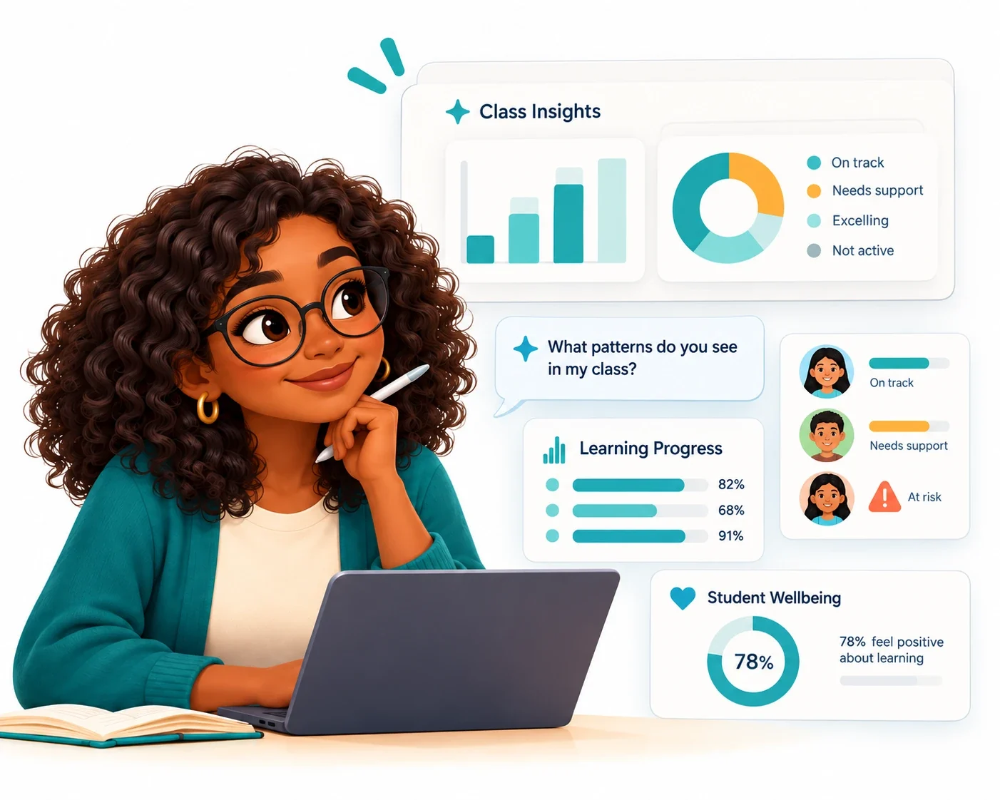
Four steps, from preparing the lesson to reviewing progress.
The lesson is ready, and you choose which guided tools students use.
Assessments, Flex games, and projects show who has it.
See progress, participation, and support needs.
You decide what happens next.
During early implementation, our team can teach alongside you, then keep supporting you after rollout.
Services →Start with a hands-on platform orientation. Schools can also add Educator AI Training: CPD-certified modules in prompting, responsible AI, verification, assessment, and your daily workflow — and earn a CPD certificate.
Educator AI Training →We help make teaching AI easier.
See a lesson and the classroom tools you'd use.
aiSTART gives you a guided place to understand AI, question it, create with it, and learn where it can go wrong.
You stay the thinker.
AI helps you along the way.
Drag the stickers to decorate your laptop.
Lessons, activities, challenges, tools, and projects — all designed for your level.
It helps you figure out what to do next instead of doing the work for you.
Write a story, design a character or product, code, build a presentation, or test an idea. The AI helps. You decide.
Join Flex games, answer live, challenge classmates, and see how you're doing.
Projects show you what to make, how it's marked, when it's due, and the feedback you get.
Your dashboard shows what you've done, what's next, and what needs attention.
From storybooks in Grade 4 to startup pitches in Grade 11 — the kinds of projects students build with aiSTART.
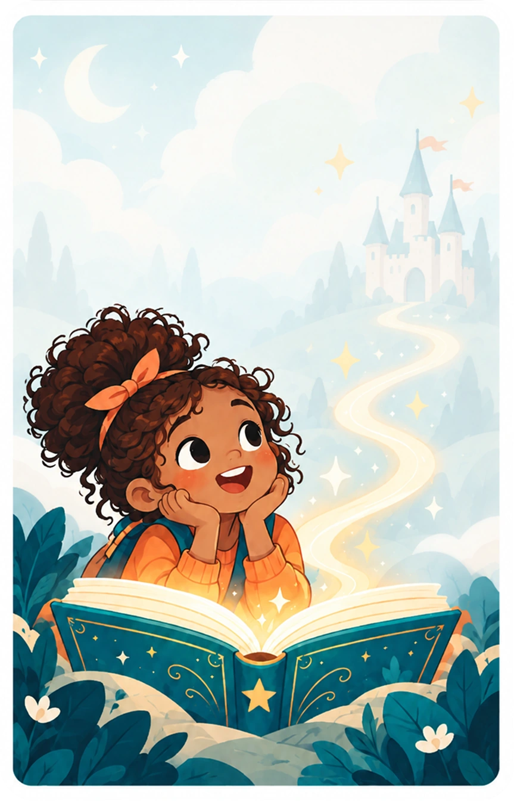
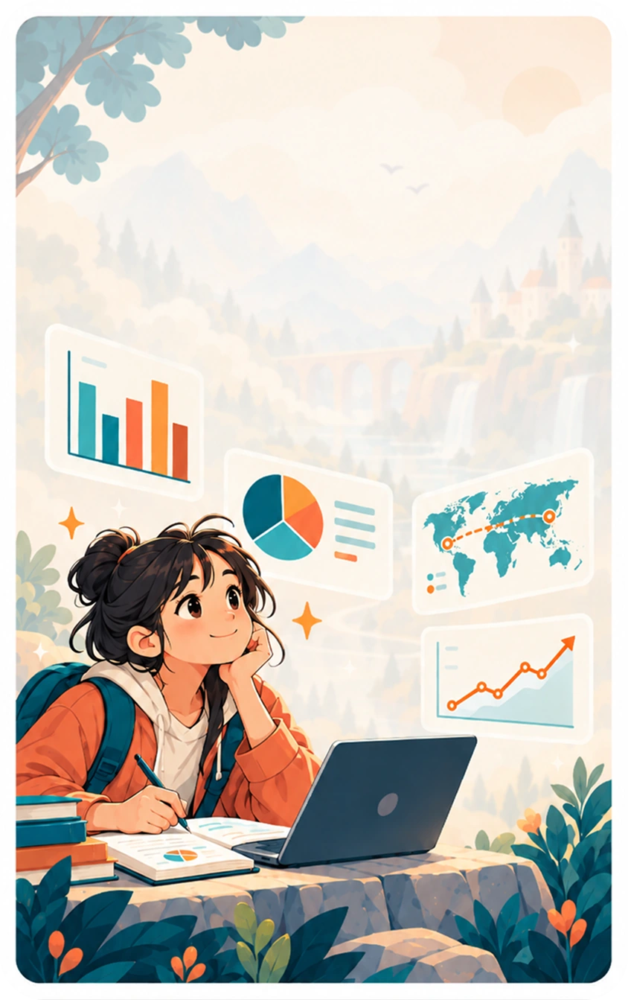
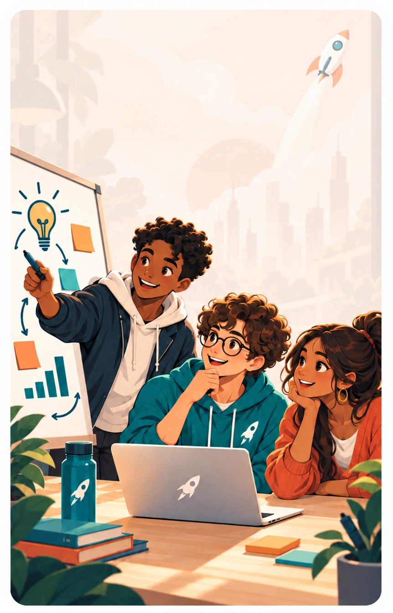
My Commitment to Responsible AI Use
Log in to pick up where you left off. Not yet? Ask your teacher about aiSTART.
We help them learn how to use it well.
aiSTART gives students a guided learning environment to understand AI, create with it, and build good habits — checking facts and protecting their privacy — under school supervision.
Structured lessons and projects, using only the tools their school has switched on. They may create stories, design, investigate evidence, analyze data, code, play class games, and build projects.
The Private Tutor helps when they're stuck while encouraging them to keep thinking for themselves.
Parents don't have their own aiSTART login. Your child's school is your point of contact — for questions about progress, classroom use, or your child's information.
Teachers see your child's progress and learning activity, and authorized school staff can notice when a student may need extra support.
Support signals are reviewed by people. They are not medical or psychological diagnoses, and AI does not make decisions about your child's wellbeing.
Yes. Lessons and tools are designed for each grade, from KG1 to Grade 12, and schools control which tools students can access.
No. aiSTART does not use identifiable student content to train general-purpose AI models, does not allow its AI providers to do so, and never sells student information or uses it for advertising. Data & governance →
Only authorized school staff — such as teachers, administrators, counsellors, and safeguarding staff — based on their role. Your school decides who has access. aiSTART never sells student information or uses it for advertising.
Each aiSTART session lasts 45–60 minutes. Your child's school decides how often classes run.
Only if a specific module needs it. Camera and microphone access isn't requested otherwise.
Built-in guardrails block explicit content, hate speech, harassment, impersonation of real people, and political content. How it works →
Academic integrity is taught throughout the curriculum, the Private Tutor guides rather than answers, and students commit to the Student Oath. Suspected misconduct is flagged for teachers to review with the student.
Safely, with their school, one lesson at a time.
aiSTART is a learning environment built for schools. Your school chooses which AI tools students use, and every grade teaches students to verify answers and protect their data.
Your school is the data controller; Slangit only processes information to deliver the service, on your instructions.
Who uses aiSTART, what's shared, which features are on, who sees student information, and how long it's kept.
Train general-purpose AI models on identifiable student content, sell student information, or use it for advertising.
Analytics don't inform significant decisions about a student without human review.
Source: aiSTART Privacy Policy (PP-030326-Rev02, effective 3 March 2026).
aiSTART is GDPR-compliant and designed to comply with local laws and regulations in each country where it's deployed, aligned with the cultural and regulatory standards of the Arab world.
Hosting depends on your deployment. Ask us about available regions, data residency, international transfer safeguards, and on-premises or dedicated deployment options.
Retention periods are set in your agreement. When it ends, we can return or export your data and delete it; backups are overwritten on our regular backup cycle.
Student accounts are only created through a school or education authority. Where parental consent is legally required, responsibility for obtaining it is set out in the agreement.
aiSTART uses multiple large language models, each tested for cultural and demographic bias before it's made available. Prompts go to contracted providers only to generate the response. A subprocessor list is available on request.
If a data breach occurs, we investigate, contain it, preserve evidence, notify your institution where required, and support you in meeting your legal obligations.
Students only use the AI tools your school has switched on inside aiSTART.
Content moderation and prompt safety controls block explicit material, hate speech, harassment, impersonation of real people, false information about people, and political content.
Suspected academic misconduct is flagged to teachers for their judgment.
Schools set safeguards and access to fit their policies, culture, age groups, and implementation model.
Students, teachers, administrators, counsellors, and safeguarding staff each see only what their role allows — especially student analytics and safeguarding information.
Where enabled, aiSTART can flag interactions that may need a responsible adult's attention — such as references to self-harm, violence, abuse, bullying, or dangerous activities — and notify authorized safeguarding staff.
An alert is a prompt for human review — not proof that something happened, a disciplinary finding, or a diagnosis.
aiSTART does not diagnose mental health conditions, replace teachers, counsellors, or medical professionals, or make significant decisions about a learner without meaningful human involvement.
aiSTART is not an emergency service and shouldn't be the only way a student is protected. Schools remain responsible for their own safeguarding policies, trained personnel, escalation procedures, and emergency processes.
Students repeatedly practise protecting personal information, verifying AI content, spotting misinformation and manipulated media, questioning bias, and keeping academic integrity.
Topics covered: Privacy, Verification, Misinformation, Bias, AI Limitations, Manipulated Media, Academic Integrity, and Human Responsibility. Every student also commits to the Student Oath.
Slangit Technologies FZCO
PP-030326-Rev02 · Effective 3 March 2026
How personal information is collected, used, stored, shared, and protected on aiSTART. The key points are summarized in section 1.
BP-030326-Rev02 · Effective 3 March 2026
The framework for safe, ethical, and responsible use of aiSTART in K–12 schools: permitted and prohibited uses, academic integrity, and safety controls. Schools can adapt it into their own policy, as local laws require.
Student-facing areas don't use cookies for targeted advertising. Cookie use is covered in section 15 of the Privacy Policy.
Service terms are set out in each school's agreement with Slangit Technologies.
We want aiSTART and this website to be usable by everyone, including people with disabilities. We are working towards the Web Content Accessibility Guidelines (WCAG) 2.2, Level AA.
If you find something hard to use, email support@slangit.ai and we'll aim to help.
Questions or privacy requests: support@slangit.ai
Setup, platform training, and a curriculum overview come with aiSTART. When you want more, add AI training for teachers, curriculum hosting, or curriculum conversion.
Everything your school needs to go from setup to confident, everyday use.
We create student and teacher accounts, integrated with your admin's Gmail, and set up classes, roles, and permissions.
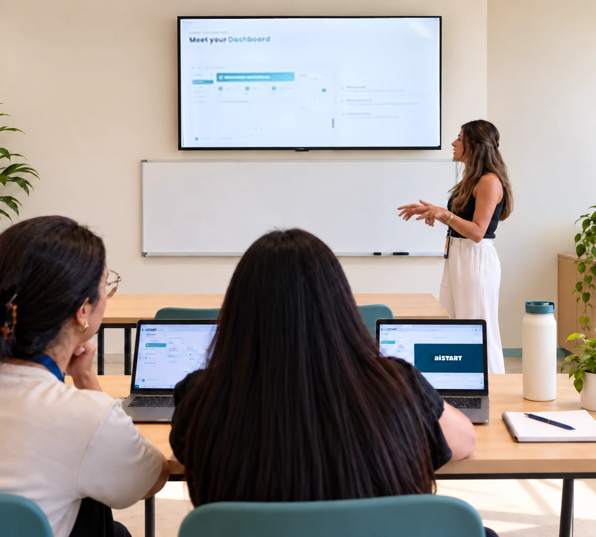
A one-day, hands-on orientation for teachers in Grades 4–12, across IB, American, and GCSE curricula.
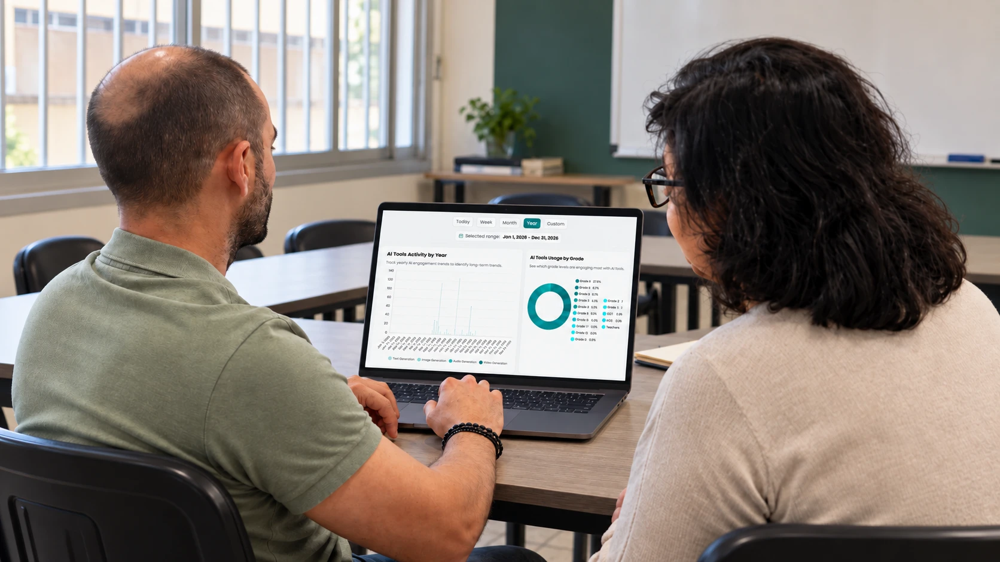
School leaders get a separate 60-minute admin orientation.
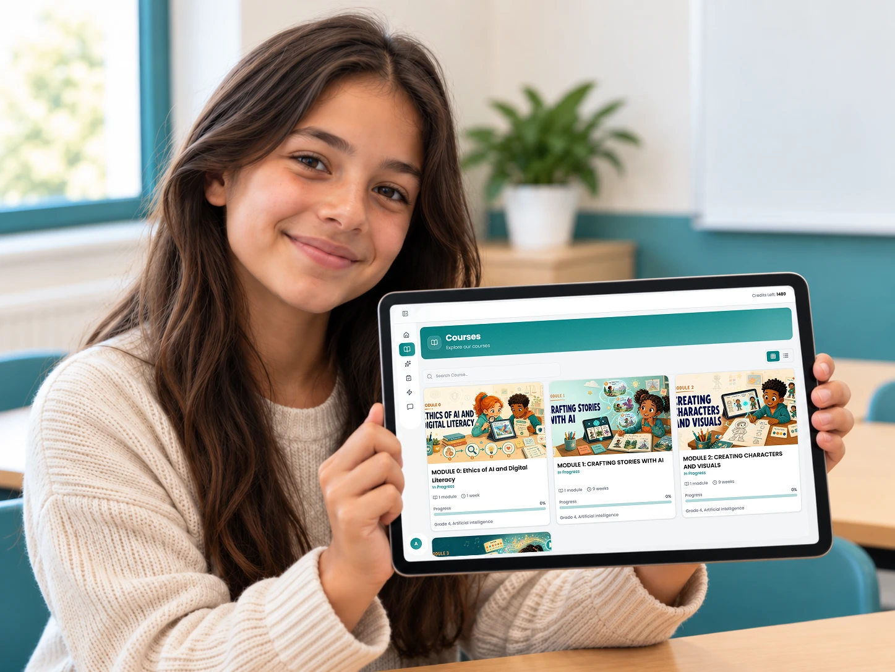
How the KG1–Grade 12 pathway, grade journeys, and lessons fit your timetable.
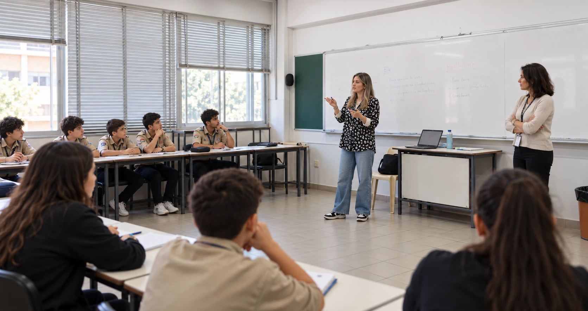
Our team works alongside your teachers in early lessons, showing how activities and tools work in practice.
Teachers and administrators can reach us for guidance and troubleshooting as usage grows.
A hands-on day for all teachers in Grades 4–12, across IB, American, and GCSE curricula.
School leaders get a separate 60-minute admin orientation.
Available separately, for schools that want to go further. Ask about additional services
Practical, instructor-led AI modules for teachers' own work, online or in person. Teachers who complete a module earn a CPD certificate.
See all modules ↓Host your own subjects in aiSTART, so your school can use its tools across more of the curriculum.
We turn static lessons into interactive content your students can work through in aiSTART.
Instructor-led modules, online or in person, for teachers' own work. Each completed module earns a CPD certificate that records the teacher's CPD hours.
Write effective prompts, differentiate activities, build reusable AI assistants, and leave with a personal AI teaching toolkit.
Recognize AI risks, protect student data, detect bias, and draft a school AI policy.
Compare leading AI tools and choose the right one for each teaching task.
Catch hallucinations and bias, and verify AI answers and their sources.
Redesign a real assessment so it still measures learning when students use AI.
Bring AI into planning, assessing, and communicating, and build ready-to-run tools for your week.
Prepare school leads to teach AI literacy to colleagues: how AI turns data into patterns, and why confident isn't correct.
Setup, platform training, a leader orientation, a curriculum overview, shadow teaching when needed, and ongoing support come with aiSTART. Educator AI Training, curriculum hosting, and curriculum conversion are available separately.
We do. We create student and teacher accounts, integrated with your admin's Gmail, and set up classes, roles, and permissions.
No. Lessons are designed for school teachers to deliver, every teacher gets a platform training day, and our team can teach alongside them when needed.
It's a one-day, hands-on session, included with aiSTART. School leaders get a separate 60-minute admin orientation.
aiSTART is web-based and works on any device with a browser.
The goal
We'll plan setup, training, and any additional services with you.
Every plan covers the full KG1–12 pathway for a full school year. Choose how far you want to take AI — from a controlled introduction to a complete AI learning infrastructure.
For schools starting AI adoption.
For AI-driven schools and innovation programs.
Everything in Explorer, plus:
For school networks, ministries, and national programs.
Everything in Adopter, plus:
| Feature | AI Explorer | AI Adopter | AI Champion |
|---|---|---|---|
| Purpose | Controlled AI introduction for schools | AI integrated into classroom teaching | Full AI learning infrastructure |
| Best for | Schools starting AI adoption | AI-driven schools & innovation programs | School networks, ministries & national programs |
| AI tools for teachers & students | ✓ Limited tokens | ✓ Limited tokens | ✓ Full ecosystem of AI tools & models |
| AI Tutor (student assistance) | ✓ AI Private Tutor | ✓ AI Private Tutor | ✓ AI Private Tutor with student analytics |
| AI curriculum integration | ✓ AI modules | ✓ AI modules | ✓ Full AI-powered curriculum ecosystem |
| Curriculum hosting | Additional service | Additional service | Additional service |
| AI assessment generator | ✗ | ✓ Structured assessments | ✓ AI-evaluated assessments with learning insights |
| Audio lesson converter | ✗ | ✗ | ✓ AI narration & accessibility optimization |
| Performance analytics | ✓ Basic usage analytics | ✓ Classroom learning analytics | ✓ Deep learning intelligence & predictive insights |
| Digital Learning ID | ✗ | ✗ | ✓ Lifelong digital learning identity |
| Student learning profile | ✗ | ✓ Skill tracking | ✓ Full competency & capability mapping |
| Community space | ✓ School collaboration | ✓ Advanced collaboration | ✓ Multi-school & ecosystem collaboration |
| AI nudging system | ✗ | ✓ Smart nudges | ✓ Personalized learning journey |
| AI personas (mentors / advisors) | ✗ | ✗ | ✓ Specialized AI mentors & advisors |
| Career & skills mapping | ✗ | ✗ | ✓ Future skills & career intelligence |
| Administrative dashboards | ✓ Basic monitoring | ✓ Basic monitoring | ✓ Expert Corner access |
| Data governance & AI safety | ✓ Controlled AI environment | ✓ Controlled AI environment | ✓ Controlled AI environment |
| Support | ✓ Limited shadow teaching | ✓ Shadow teaching & parent updates | ✓ Shadow teaching, parent updates & teacher upskilling |
All plans include onboarding and cover the full KG1–12 pathway for a full school year. Exact features depend on the agreed plan.
Every deployment is different — the number of students and schools, and the support you need. Tell us about your school and we'll prepare a proposal for your chosen plan.
The full KG1–12 pathway for a full school year, the AI Private Tutor, onboarding, shadow teaching, and a controlled, safe AI environment.
Talk to us about moving up as your school's use of AI grows.
Tell us about your school and we'll recommend the right one.
Tell us about your school and we'll prepare a proposal for your plan.
Tell us about your school and we'll show you how aiSTART could work in your environment.
We'll email you within 2 working days to schedule your 30-minute call.
How schools, educators, and partners are introducing structured AI learning with Slangit and aiSTART.
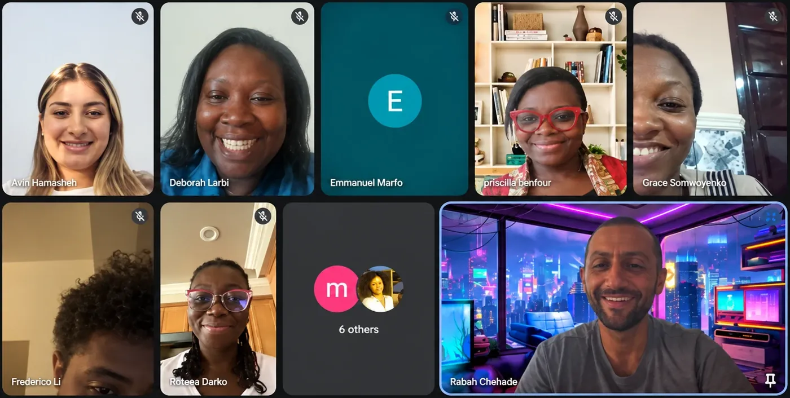
Educator training · GhanaEducators in Ghana joined AI Literacy 101, the train-the-trainer program that prepares them to lead AI literacy training in their own schools and communities. It is the first step of the five-year initiative with GADEF International.
Educator AI Training →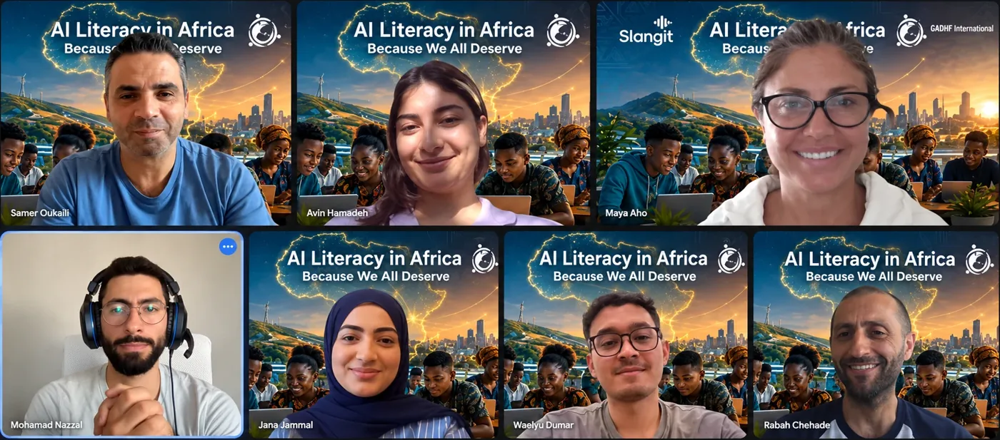
Partnership · AfricaA five-year initiative advancing AI literacy across Africa, beginning in Ghana.
Read the announcement →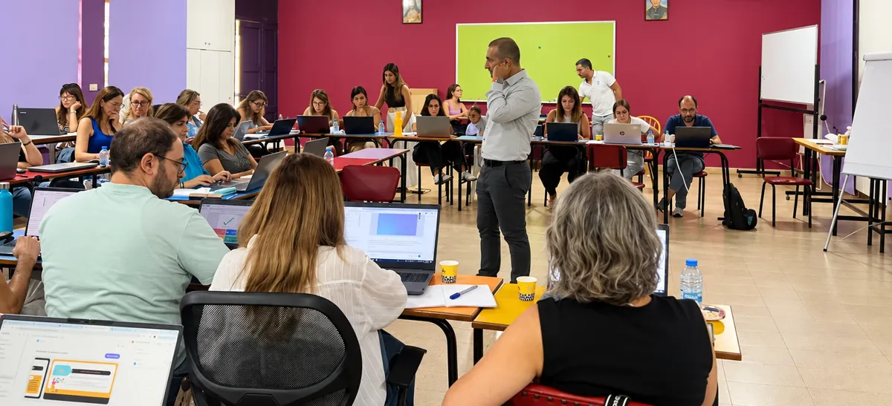
Educator trainingTeachers learned to move beyond basic prompts with structure, context, role definition, constraints, and iterative refinement.
Educator AI Training →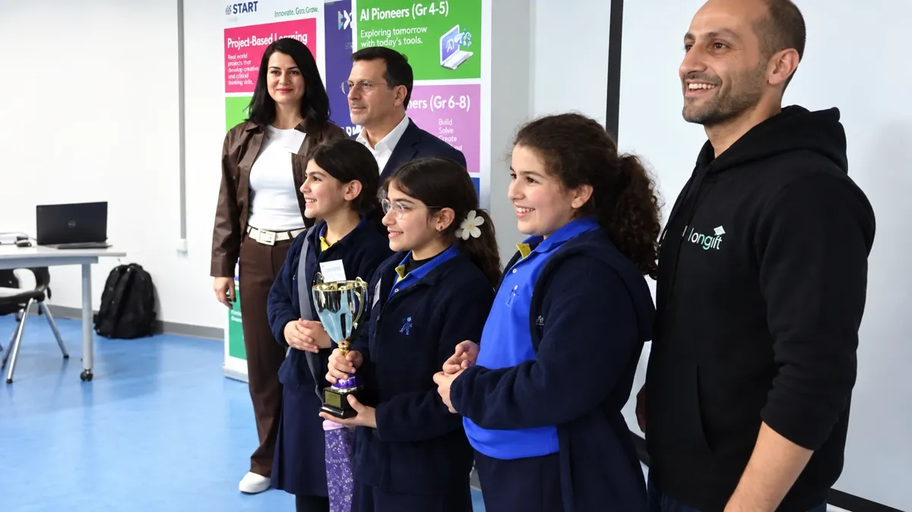
Event · BeirutGrades 4–6 opened the day by taking the aiSTART Student Oath, then built and innovated with AI. Slangit now runs inter-school competitions that promote honest, safe AI use and AI for social good.
Watch the TV report on LinkedIn →News from schools, educators, and partners using aiSTART.
“Short testimonial.”
Name“Short testimonial.”
Name“Short testimonial.”
NameThe principles and research that shape how we design AI learning for schools.
Platform activity, engagement, and assessment patterns are useful signals. We don't claim they prove aiSTART improves academic performance, mental health, or other outcomes unless those outcomes have been separately and properly validated.
Wellbeing and safeguarding indicators are always
Signals for human review
— never diagnoses, clinical measurements, or automated conclusions.
Content not provided yet.